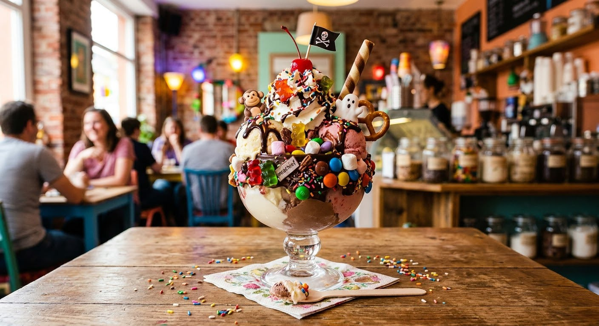
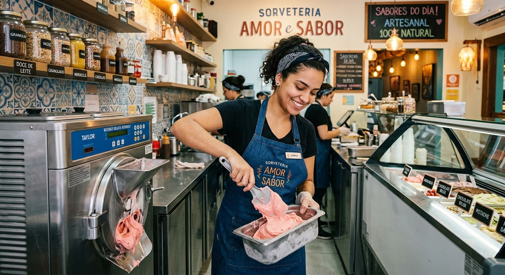
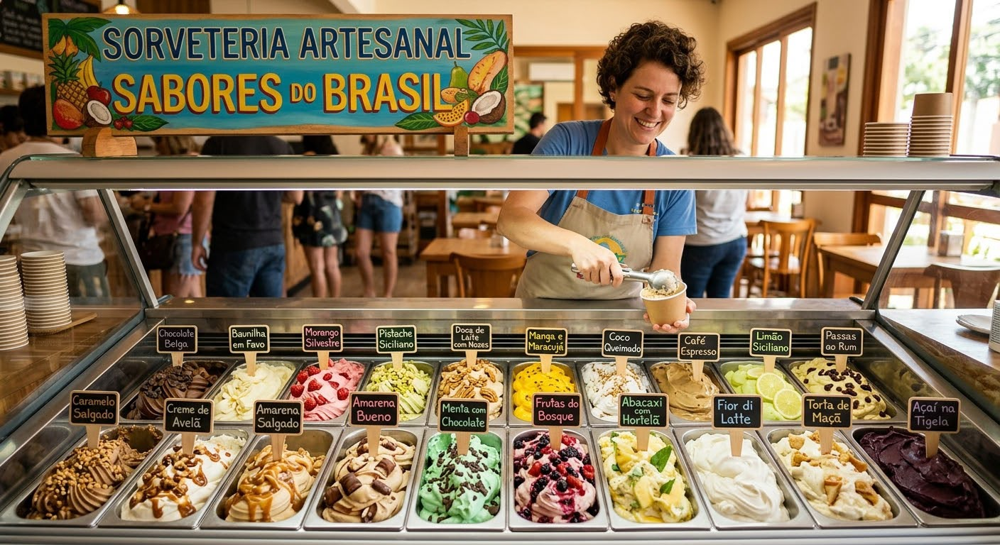

Sabores Artesanais, Momentos Especiais Sobre Nossa Sorveteria Fundada com paixão por transformar ingredientes selecionados em momentos inesquecíveis, nossa sorveteria é dedicada a oferecer sorvetes artesanais preparados com carinho e atenção em cada detalhe. Buscamos os melhores ingredientes para criar sabores irresistíveis, combinando qualidade, criatividade e aquele toque especial que torna cada colherada única.

Garantimos que você vai se apaixonar pelos nossos sabores assim que experimentar. Venha fazer parte da nossa história: seja para adoçar o seu dia, compartilhar bons momentos com amigos e família ou simplesmente desfrutar de um delicioso sorvete no seu próprio tempo. Aqui, cada sabor é preparado para tornar seus momentos ainda mais especiais.

Aqui está uma lista com 15 deliciosos sabores de sorvetes artesanais para você conhecer